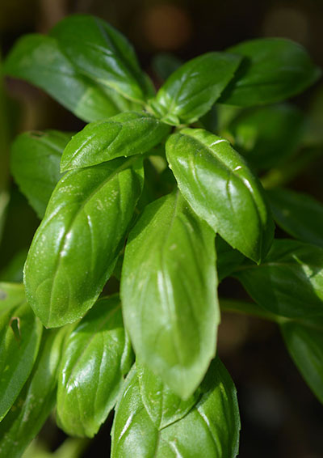

Sød, storbladet basilikum
Ocimum Basilicum
- Type: Basilikum
- Højde: 45 cm
- Såafstand: 20 cm
- Rækkeafstand: 30 cm
- Sådybde: 1 cm
- Lysforhold: sol
- Forspiring: Marts April Maj Juni
- Udplantning/såning på friland: Maj Juni Juli
- Spiring efter: ca. 20 dage
- Moden til høst efter: ca. 60 dage
Beskrivelse:
Herlig, god marvært der giver 7-10 ærter/bælg. En høj sort som kræver støtte, giver rigeligt udbytte på et lille areal. Giver udbytte i en lang periode. Velegnet til frysning. Noget sødere i smagen end normal marvært, men kan ikke sås lige så tidligt om foråret. Trives i porøs jord, men er ganske nøjsom. Vandes ved tørke. Dyrk ærter forskellige steder i køkkenhaven hvert år. De gøder jorden.
Frilandssåning: Når jorden er mindst 10°C varm, ellers rådner frøene. Vand sårillen før såning. Hold såningen fugtig, til frøene er spiret.